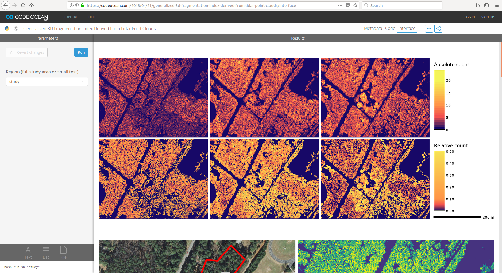

Dissertation defense
Geospatial analytics
for point clouds
in an open science framework
Vaclav (Vashek) Petras
North Carolina State University
GeoForAll Lab
at
Center for Geospatial Analytics
April 23, 2018
Point clouds
- set of points in 3D space
- “a lot of XYZ coordinates”
- sources
- airborne lidar
- terrestrial lidar
- SfM-derived (based on UAV imagery)
- short-range sensors

Point cloud usages
- flood modeling [e.g., Webster et al. 2010]
- wildfire fuel assessment [e.g., Gajardo et al. 2014]
- habitat characterization [e.g., Sasaki et al. 2016]
- land cover classification [e.g., Antonarakis et al. 2008]
- ...

Outline
- Point densities in point clouds
- Description of 3D vegetation structure
- Reproducibility and open science
- Go to https://codeocean.com/...
- Run the code
- Create an account (name, email, password)

Point densities in point clouds
Examining point densities and their anomaliesHomogenizing point cloud to remove density variations
Decimating point cloud to deal with high density
Point densities
- spatial distribution of points in a point cloud
natural and planted forest (transect) distinguished by vertical distribution of points
Use of point densities
- biomass estimation [e.g., Calders et al. 2015]
- leaf area density distribution [e.g., Oshio et al. 2015]
- crown density [e.g., Dalponte et al. 2009]
- subcanopy solar radiation [e.g., Bode et al. 2014]
- vegetation structure [e.g., Sasaki et al. 2016]

Questions
- What are the different density anomalies and associated issues?
- What are causes and solutions?
Airborne Lidar Example: Scan Line Densities
- issue: high density at the end of the line*
- cause: mechanics of the scanner
- associated elevation error: may indicate low quality points

detail of an end of scan line
* Issue for density-dependent products, processing speed, …
Airborne Lidar Example: Swath Overlaps
- issue: doubled density
- cause: necessary swath overlaps
- associated elevation error: may indicate abrupt changes in elevation
point density in swath overlap
Airborne Lidar Example: Banding
- issue: doubled density
- cause: necessary swath overlaps
- associated elevation error: may be associated with bended elevations

density waves (banding)
SfM-Derived Point Cloud Example
- issue: locally increased density
- cause: edges/sites of objects
point distribution in SfM-derived (UAV) point cloud
Point Cloud Merging Example
- issue: different density and vertical distribution of points
- cause: each method produces point clouds with very different properties

vertical point distribution in lidar and SfM-derived point clouds
Terrestrial Lidar Example: Overall Point Distribution
- issue: different density and vertical distribution of points
- cause: each method produces point clouds with very different properties
- associated processing challenge: increased processing time

terrestrial lidar (raster resolution 0.5 m, red color used for 80 to 18 thousand points per cell)
Short Range Scanner Example: Variable Density
- issue: pattern of high and low densities diminishing further from the sensor
- cause: inner working of the sensor
- associated processing challenge: increased processing time and empty spaces

Kinect short range scanner (0.37 m × 0.35 m, raster resolution 0.002 m)
Decimation
- decimation ~ thinning ~ sampling
- makes the point cloud smaller, more manageable
- count-based decimation: preserves variations in density
- grid-based decimation ~ binning: removes variations in density


count-based decimation effect
Homogenization
- decimation ~ thinning ~ sampling
- makes the point cloud smaller, more manageable
- count-based decimation: preserves variations in density
- grid-based decimation ~ binning: removes variations in density

grid-based decimation effect
Questions
- Which decimation performs better for topography and microtopography?
- How this changes with the point cloud acquisition method?
- Are the simplest decimations enough? Or do we need to use slower but more sophisticated techniques?
Evaluating level of detail
- microtopography [e.g., Watt 1947]: small variations in topography
- local relief model [Hesse 2010]: features other than trend


sub-meter features: 30-60cm wide, 30cm deep, 60m long gully and tillage (resolution 30cm)
Influence of grid-based decimation resolution


 grid size: 0.1 m → 0.3 m → 0.9 m → 1.5 m
grid size: 0.1 m → 0.3 m → 0.9 m → 1.5 m
(points removed: 0 % → 81 % → 98 % → 99 %)
Removing points
Airborne lidar
- count-based and grid-based decimations are equivalent

Terrestrial lidar
- grid-based decimation performs better

Contributions
- identification of density anomalies, their causes, resulting issues, and solutions
- significant decimation is possible with (micro)topography preserved
- with data from all 4 tested sensors
- faster and simpler count-based decimation more advantageous
- in most cases count-based decimation provided same results as grid-based decimation
- needed when relative density needs to be preserved
- more complex grid-based decimation needed for specific cases
- beneficial for terrestrial lidar data
- beneficial for homogenization
Publications
Published
Petras, V., A. Petrasova, J. Jeziorska, and H. Mitasova (2016). Processing UAV and lidar point clouds in GRASS GIS. In: ISPRS-International Archives of the Photogrammetry, Remote Sensing and Spatial Information Sciences XLI-B7, p. 945–952. DOI 10.5194/isprs-archives-XLI-B7-945-2016[675 reads on ResearchGate, Apr 16, 2018]
To be submitted
Density anomalies in point clouds (Chapter 2).Target journal: MDPI Remote Sensing

Software
- extended GRASS GIS module for binning (r.in.lidar)
- created GRASS GIS module for binning in 3D (r3.in.lidar)
- created module for count- and grid-based decimation (v.decimate)
- extended GRASS GIS module for point cloud import (v.in.lidar)
- local relief model implementation for GRASS GIS (r.local.relief)
- point cloud transect (v.profile.points)

Educational material
Processing lidar and UAV point clouds in GRASS GIS
available online
(and translated to Spanish by GRASS GIS community).
Training
Workshop at FOSS4G 2017 in Boston,Center for Geographic Analysis, Harvard University.
Description of 3D structure in lidar point clouds
Describing vegetation using lidar point cloud in three dimensionsLidar point clouds
- lidar penetrates vegetation (not only top of canopy)
- points in the vegetation (not only ground points)
- vegetation-related applications
- habitat characterization [e.g., Sasaki et al. 2016]
- fuel modeling [e.g., García et al. 2011]
- tree models [e.g., Gorte & Winterhalder 2004]
- ...
- challenging to process (large, unstructured, 3D)
Questions
- Is 3D raster representation appropriate for lidar data analysis?
- How to derive and describe 3D structure captured in lidar point clouds?
- Is a 2D landscape index extensible and applicable to 3D vegetation structure?
3D raster
voxel-based (cube-based) representation of space
2D forest fragmentation index

forested areas
2D forest fragmentation index

forest fragmentation index [Riitters et al. 2000]
Fragmentation index
assignment of fragmentation classes [Riitters et al. 2000], generalized
- number of occupied cells are in the neighborhood
- number of partially occupied cells pairs are in the neighborhood
- number of fully occupied cells pairs are in the neighborhood
- new equations for 3D and generalized
- 3D moving window
- interior limit added
- interior based on circle equation
- limits (classes) customizable
- used for vegetation scale, not landscape scale
Point cloud and presence profiles

slice of raw point cloud and slice of 3D raster with cells marked as presence or absence
Point cloud and index profiles

slice of raw point cloud and slice of fragmentation index 3D raster
Profile of 3D raster

one possible profile of a 3D raster
As 2D raster

most common class in vertical column and point density
Contributions
- 3D raster representation is suitable for lidar data analysis of vegetation structure
- 2D remote sensing and landscape ecology concepts can be applied in 3D
- generalized 3D fragmentation index is now available
- aggregation method resulting in a 2D raster is also available
Publication
Petras, V., D. J. Newcomb, and H. Mitasova. 2017. Generalized 3D fragmentation index derived from lidar point clouds. In: Open Geospatial Data, Software and Standards 2(9). DOI 10.1186/s40965-017-0021-8[Accessed 1351 times at SpringerOpen, Apr 16, 2018]

Software
- 3D fragmentation index (r3.forestfrag)
- revised 2D fragmentation index (r.forestfrag)
- dominant fragmentation class (r3.count.categories)
- profile/slice of a 3D raster (r3.profile)
- 3D scatter plot of 3D raster (r3.scatterplot)
- 3D scatter plot of 2D raster (r.scatterplot)

A framework for open science
Publishing the results in a reproducible wayReproducibility of Computational Articles
Stodden et al. (PNAS, March 13, 2018)204 computational articles from Science in 2011–2012
| computationally reproducible | 26% |
| computationally irreproducible | 74% |
Science and software
- software must be available to readers [Nature Methods - 4, 189 (2007)]
- source code part of method description [Ince et al. 2012, Morin et al. 2012]
- recomputability orthogonal to source code [Gent 2013]
- reproducibility, replicability, and repeatability [Fehr et al. 2016]
- use of open source tools part of reproducibility [Less 2012, Alsberg & Hagen 2006]
- easily reproducible result reproduced in 10 minutes [Schwab et al. 2000]
State of the Art

- binary
- not flexible, not transparent
- source code
- not enough by itself
- Thanks for that GitHub link.
What does it do? [Nabors 2016]
- code repository
- easy to delete (e.g GitHub)[Bergman 2012]
- virtual machine
- too cumbersome (large files, not descriptive)
- web service
- somebody needed to keep it running
Questions
- How to ensure reproducibility of results in the paper?
- Where to publish source code so it is preserved?
- How to publish software so it is reusable*?
- How to identify a platform for building and publishing research code?
*Reusable also outside of the original research field.
Use Case
Petras et al. 2017
Petras, V., Newcomb, D. J., & Mitasova, H. (2017). Generalized 3D fragmentation index derived from lidar point clouds. In: Open Geospatial Data, Software and Standards 2(1), 9. DOI 10.1186/s40965-017-0021-8
Description in the paper
Availability of data and materials section refers to data, software used, new software, and code for full reproducibility.[Petras et al. 2017]
Open Science Publication Framework
| Component | in Petras et al. 2017 (use case) |
|---|---|
| Text | background, methods, results, discussion, conclusions, … |
| Data | input data (formats readable by open source software) |
| Reusable code | methods as GRASS GIS modules (C & Python) |
| Publication-specific code | scripts to generate results (Bash & Python) |
| Computational environment | details about all dependencies and the code (Docker, Dockerfile) |
| Versions | repository with current and previous versions* (Git, GitHub) |
* Version associated with the publication included also as a supplemental file.
Computational Environment and Reproducibility
- all dependencies specified and provided
- Docker provides isolated, self-contained environment
- repository gives concrete steps
Part of a README file from repository associated with Petras et al. 2017 paper (github.com/wenzeslaus/forestfrag3d)
Reproducibility
- result after running the commands
Data-driven figures reproduced using the repository associated with Petras et al. 2017 paper
Reproducibility
Finished recomputation at CodeOcean
Publication-Specific Code
- creates exact results as published in the paper
- works with specific input data
- Petras et al. 2017: Bash and Python scripts
Reusable Code
- new software for reuse
- flexible reproducibility and replicability
- works with any data
- Petras et al. 2017: GRASS GIS modules (C and Python)
Publishing Reusable Code Through Software Platform
- Avoiding creation of a new open source project for each paper
- GRASS GIS can integrate smaller projects.
- New methods as new functions or improvements of existing ones
- GRASS GIS modules can be added or extended.
- Preprocessing, visualization, and user interface included
- Different tools and interfaces are available in GRASS GIS.
- Well integrated with existing analytical tools
- GRASS GIS modules use unified interfaces and exchange formats.
- Small, isolated projects often disappear
- GRASS GIS modules get long-term maintenance from the community.
Platform evaluation criteria
- Does the contributed scientific code survive over time?
- How easy is it for a user to inspect the underlying code?
- Who are the authors of significant additions to the code?
- Are they the same as the maintainers of the code?
- Are they the same as the original authors?
- How much original research is in the software?
- What is the ratio of original research code and implementations of existing methods?
- How many researches are contributing the original research?
- …
Contributions
- general publishing framework for open science
- components: text, data, reusable code, publication-specific code, computational environment, versions
- concept of software platform for publishing and preserving scientific code
- criteria: license, code authorship & sustainability, integration, …
- candidates & examples: R, Octave, GRASS GIS, LANDIS-II, …
- addressing specific challenges of geospatial science
- reproduction & reuse outside of academia, visualization, data formats, …
Publications
Published
Petras, V., A. Petrasova, B. Harmon, R. K. Meentemeyer, and H. Mitasova (2015). Integrating free and open source solutions into geospatial science education. In: ISPRS International Journal of Geo-Information 4(2), p. 942-956 [2727 full-text views, Altmetric Attention Score 20 (in the top 25%), Apr 16, 2018]
To be submitted
A framework for open geospatial science (Chapter 6).
Target journal:
Environmental Modelling & Software

Related publications
Rocchini, D., V. Petras, A. Petrasova, N. Horning, L. Furtkevicova, M. Neteler, B. Leutner, and M. Wegmann. Open data and open source for remote sensing training in ecology In: Ecological Informatics 40, 2017, p. 57-61, DOI 10.1016/j.ecoinf.2017.05.004.
Related posters
Petras, V., Petrasova, A. & Mitasova, H. Tools for open geospatial science. AGU Fall Meeting Abstracts 51 (2017).
Petras, V., Y. Chemin, M. Landa, T. Leppelt, P. Zambelli, L. Delucchi, M. Di Leo, S. Gebbert, and M. Neteler (2017). How innovations thrive in GRASS GIS. NCGIS2017, Raleigh, NC, USA.
Petras et al. EGU 2015
Chemin et al. EGU 2015
Petras, V. and Gebbert, S. AGU 2014
Teaching
- Course: Tools for open geospatial science
- teaching materials published as a website
- research focus with extension to industry
- topics: advanced writing tools, revision control systems, command line, remote access, Linux, QGIS, GRASS GIS, GDAL, interactive notebooks, publishing source code
Summary and Conclusions
- Review and analysis of density anomalies and related errors in point clouds
- Evaluation of methods for homogenization and decimation which with anomalies and dense point clouds
- Method for 3D vegetation structure description
- Software tools which are implementing these methods
- Methods and training to understand, organize, and ensure reproducibility